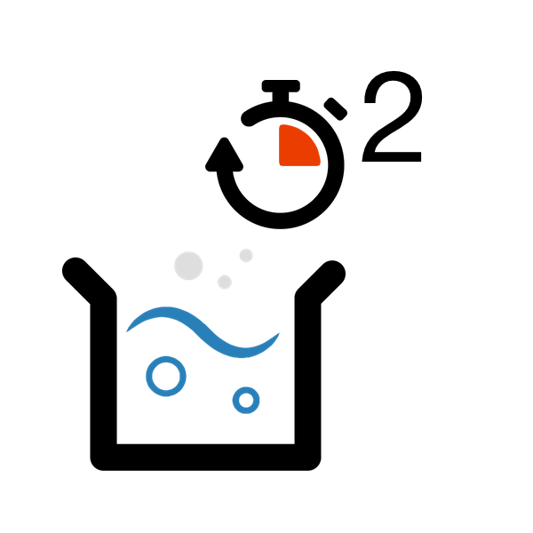

Purify Dirty Water. |
 |
|
Knowing how to Purify dirty water is essential if you don't live near one of our water sources. There are many ways to purify dirty water, take a look below to see some of these methods.
Boil the water.The first and easiest step to purifying dirty water is to boil it (rise its tempurature above 100 degrees celcius). To do this simply place a pot of dirty water over an open fire until it vigorously bubbles. Make sure that it is cold enough to drink before taking a sip! It is also important to note that boiling the water should only occur if the water is a little bit dirty. |
|
Keep Water ways clean. |
|
|
Doing your bit to Keep water clean is essential to the ultimate improvement of the water quality in your region. Below are a list of key steps you can take to keep your water sources clean.
Don't treat water as a rubbish tip or toilet. Water is essential to you and your families survival - dont risk it pollution by discarding waste into it. |
|
Prevent Disease. |
|
|
Water Bourne diseases can be lethal. It is super important to reduce the risk of disease spread through your water way. As soon as disease enders the water way you will not be able to drink the water without the risk of infection.
Do not contaminate the water at any cost This is very similar to the tip above - make sure that you do not contaminate waterways with any pollutions (i.e. human waste, rubbish etc.). |
|